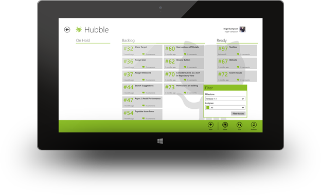

Below are the personal apps I've built for the Windows platform. If you're looking for Spinkit.Xaml the spinner styles library, or Xbox Media Remote the sample Caliburn.Micro app then they can both be found at their GitHub repositories.

My first personal Windows 8 application is a stylish way to manage your GitHub repositories and their issues. It contains a fully touch enabled drag and drop Kanban board to assign issues to user, labels and milestones as well as letting you join the discussion and comment on existing issues.